6. Operations and constructions over Vector Boolean Functions¶
In this chapter, some basic constructions for Vector Boolean functions supported by the VBF class are described. Some of them correspond to secondary constructions, which build 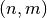 variable vector Boolean functions from variable ones (with  ). The direct sum has been used to construct resilient and bent Boolean functions [Carlet:04]. The concatenation can be used to obtain resilient functions or functions with maximal nonlinearity. The concatenation of polynomials in ANF can be used to obtain functions of high nonlinearity with
). The direct sum has been used to construct resilient and bent Boolean functions [Carlet:04]. The concatenation can be used to obtain resilient functions or functions with maximal nonlinearity. The concatenation of polynomials in ANF can be used to obtain functions of high nonlinearity with  variables from functions with high nonlinearity with 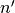 variables 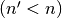. Adding coordinate functions and bricklayering are constructions used to build modern ciphers such as CAST [CAST:256], DES [DES:77] and AES [DaemenR:02]. Additionally, VBF provides operations for
identification if two vector Boolean functions are equal, the sum of two vector Boolean functions, the composition of two vector Boolean functions and the inverse of a Vector Boolean function.
variables from functions with high nonlinearity with 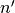 variables 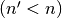. Adding coordinate functions and bricklayering are constructions used to build modern ciphers such as CAST [CAST:256], DES [DES:77] and AES [DaemenR:02]. Additionally, VBF provides operations for
identification if two vector Boolean functions are equal, the sum of two vector Boolean functions, the composition of two vector Boolean functions and the inverse of a Vector Boolean function.
6.1. Equality testing¶
6.1.1. Description¶
Let  ,
,  . F and G are equal if their Truth Tables are the same.
. F and G are equal if their Truth Tables are the same.
6.1.2. Library¶
We can compare two functions for equality with the following method:
long operator==(VBF& F, VBF& G)
long operator!=(VBF& F, VBF& G)
6.1.2.1. Example¶
The following program informs if two Vector Boolean functions are equal given their Truth Tables.
#include <iostream>
#include <fstream>
#include "VBF.h"
int main(int argc, char *argv[])
{
using namespace VBFNS;
VBF F, G, X;
NTL::mat_GF2 Tf, Tg;
ifstream input1(argv[1]);
if(!input1) {
cerr << "Error opening " << argv[1] << endl;
return 0;
}
input1 >> Tf;
F.puttt(Tf);
input1.close();
ifstream input2(argv[2]);
if(!input2) {
cerr << "Error opening " << argv[2] << endl;
return 0;
}
input2 >> Tg;
G.puttt(Tg);
input2.close();
if (F == G) {
cout << "F and G are equal" << endl;
} else {
cout << "F and G are not equal" << endl;
}
return 0;
}
The output for the execution of the example program with the code above and the Truth Tables of 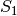 and 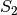 DES S-boxes as inputs would be:
F and G are not equal
6.2. Composition¶
 ,
,  and the composition function
and the composition function  where
where  .
.
6.2.2. Library¶
It can be obtained with the following method:
void Comp(VBF& X, VBF& F, VBF& G)
6.2.2.1. Example 1¶
The following program provides the correlation immunity and balancedness of two Vector Boolean functions given their Truth Tables and calculates the same criteria for their composition.
#include <iostream>
#include <fstream>
#include "VBF.h"
int main(int argc, char *argv[])
{
using namespace VBFNS;
VBF F, G, X;
NTL::mat_GF2 Tf,Tg;
ifstream input1(argv[1]);
if(!input1) {
cerr << "Error opening " << argv[1] << endl;
return 0;
}
input1 >> Tf;
F.puttt(Tf);
input1.close();
ifstream input2(argv[2]);
if(!input2) {
cerr << "Error opening " << argv[2] << endl;
return 0;
}
input2 >> Tg;
G.puttt(Tg);
input2.close();
cout << "Correlation immunity of F: " << CI(F) << endl;
if (Bal(F)) {
cout << "F is a balanced function" << endl;
} else {
cout << "F is a non-balanced function" << endl;
}
cout << endl;
cout << "Correlation immunity of G: " << CI(G) << endl;
if (Bal(G)) {
cout << "G is a balanced function" << endl;
} else {
cout << "G is a non-balanced function" << endl;
}
cout << endl;
Comp(X,F,G);
cout << "Correlation immunity of GoF: " << CI(X) << endl;
if (Bal(X)) {
cout << "GoF is a balanced function" << endl;
} else {
cout << "GoF is a non-balanced function" << endl;
}
return 0;
}
If we use  of CLEFIA
of CLEFIA  cipher (see CLEFIA section in “Analysis of CRYPTEC project cryptographic algorithms”) and NibbleSub Truth Tables as inputs, the output would be the following:
cipher (see CLEFIA section in “Analysis of CRYPTEC project cryptographic algorithms”) and NibbleSub Truth Tables as inputs, the output would be the following:
Correlation immunity of F: 1
F is a balanced function
Correlation immunity of G: 0
G is a balanced function
Correlation immunity of GoF: 1
GoF is a balanced function
6.2.2.2. Example 2¶
The following program provides the balancedness of two Vector Boolean functions given its polynomial representation in ANF and calculates the balancedness for the its composition.
#include <iostream>
#include <fstream>
#include "VBF.h"
int main(int argc, char *argv[])
{
using namespace VBFNS;
VBF F, G, X;
vec_pol f,g;
ifstream input1(argv[1]);
if(!input1) {
cerr << "Error opening " << argv[1] << endl;
return 0;
}
input1 >> f;
F.putpol(f);
input1.close();
ifstream input2(argv[2]);
if(!input2) {
cerr << "Error opening " << argv[2] << endl;
return 0;
}
input2 >> g;
G.putpol(g);
input2.close();
cout << "The polynomial in ANF of F is ";
cout << endl;
Pol(cout,F);
if (Bal(F)) {
cout << "F is a balanced function" << endl;
} else {
cout << "F is a non-balanced function" << endl;
}
cout << endl;
cout << "The polynomial in ANF of G is ";
cout << endl;
Pol(cout,G);
if (Bal(G)) {
cout << "G is a balanced function" << endl;
} else {
cout << "G is a non-balanced function" << endl;
}
cout << endl;
Comp(X,F,G);
cout << "The polynomial in ANF of the composition of F and G is ";
cout << endl;
Pol(cout,X);
if (Bal(X)) {
cout << "GoF is a balanced function" << endl;
} else {
cout << "GoF is a non-balanced function" << endl;
}
return 0;
}
If we use the Boolean functions of first example described in [GuptaS:05] as inputs, the output would be the following:
The polynomial in ANF of F is
x1+x2+x1x3+x1x2x3
x2+x1x2+x2x3+x1x3+x1x2x3
F is a non-balanced function
The polynomial in ANF of G is
x1+x2
G is a balanced function
The polynomial in ANF of the composition of F and G is
x2x3+x1+x1x2
GoF is a balanced function
If we use the Boolean functions of second example described in [GuptaS:05] as inputs, the output would be the following:
The polynomial in ANF of F is
x3+x1x2+x1x2x3
x2+x3+x1x2+x2x3+x1x2x3
F is a non-balanced function
The polynomial in ANF of G is
x1x2
G is a non-balanced function
The polynomial in ANF of the composition of F and G is
x3
GoF is a balanced function
6.3. Inverse¶
6.3.1. Description¶
Let 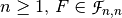. 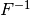 is the functional inverse of F if the composition of both functions results in the identity function.

6.3.2. Library¶
If a Vector Boolean Function $F in funct{F}_{n,n}$ is invertible, then we can find its inverse with the following method:
void inv(VBF& X, VBF& F)
6.3.2.1. Example¶
The following program provides the Truth Table of a the inverse of a Vector Boolean function given its Truth Table.
#include <iostream>
#include <fstream>
#include "VBF.h"
int main(int argc, char *argv[])
{
using namespace VBFNS;
VBF F, X;
NTL::mat_GF2 Tf;
ifstream input1(argv[1]);
if(!input1) {
cerr << "Error opening " << argv[1] << endl;
return 0;
}
input1 >> Tf;
F.puttt(Tf);
input1.close();
inv(X,F);
cout << "The Truth Table of the inverse of F is " << endl
<< TT(X) << endl;
return 0;
}
The output for the execution of the example program with the code above and the Truth Table of NibbleSub S-box as input will be:
The Truth Table of the inverse of F is
[[1 1 1 0]
[0 0 1 1]
[0 1 0 0]
[1 0 0 0]
[0 0 0 1]
[1 1 0 0]
[1 0 1 0]
[1 1 1 1]
[0 1 1 1]
[1 1 0 1]
[1 0 0 1]
[0 1 1 0]
[1 0 1 1]
[0 0 1 0]
[0 0 0 0]
[0 1 0 1]
]
6.4. Sum¶
6.4.1. Description¶
Let , . The Sum of F and G, denoted by  is the Vector Boolean Function whose Truth Table results from the addition of the Truth Tables of F and G: 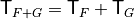.
is the Vector Boolean Function whose Truth Table results from the addition of the Truth Tables of F and G: 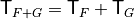.
6.4.2. Library¶
It can be obtained with the following method:
void sum(VBF& X, VBF& F, VBF& G)
6.4.2.1. Example¶
The following program provides the nonlinearity, absolute indicator and linearity distance of two Vector Boolean functions given its polynomial representation in ANF and its hexadecimal representation of Truth Table respectively and calculates the same criteria for the its sum.
#include <iostream>
#include <fstream>
#include "VBF.h"
int main(int argc, char *argv[])
{
using namespace VBFNS;
VBF F, G, X;
vec_pol f;
ifstream input1(argv[1]);
if(!input1) {
cerr << "Error opening " << argv[1] << endl;
return 0;
}
input1 >> f;
F.putpol(f);
input1.close();
ifstream input2(argv[2]);
if(!input2) {
cerr << "Error opening " << argv[2] << endl;
return 0;
}
G.putHexTT(input2);
input2.close();
cout << "The polynomial in ANF of F is ";
cout << endl;
Pol(cout,F);
cout << "nl(F)=" << nl(F) << endl;
cout << "ACmax(F)=" << maxAC(F) << endl;
cout << "LD(F)=" << ld(F) << endl;
cout << endl;
cout << "The polynomial in ANF of G is ";
cout << endl;
Pol(cout,G);
cout << endl;
sum(X,F,G);
cout << "The polynomial in ANF of the sum of F and G is ";
cout << endl;
Pol(cout,X);
cout << "nl(F+G)=" << nl(X) << endl;
cout << "ACmax(F+G)=" << maxAC(X) << endl;
cout << "LD(F+G)=" << ld(X) << endl;
cout << endl;
return 0;
}
If we use the Boolean function F with ANF  and function G with hexadecimal representation of Truth Table 0001 as inputs, the output would be the following:
and function G with hexadecimal representation of Truth Table 0001 as inputs, the output would be the following:
The polynomial in ANF of F is
x1x2+x3x4
nl(F)=6
ACmax(F)=0
LD(F)=4
The polynomial in ANF of G is
x1x2x3x4
The polynomial in ANF of the sum of F and G is
x3x4+x1x2+x1x2x3x4
nl(F+G)=5
ACmax(F+G)=4
LD(F+G)=3
These results are congruent with the properties of changing one bit of the Truth Table:
- 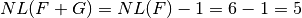.
- 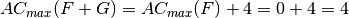.
- .
6.5. Direct sum¶
6.5.1. Description¶
Let  ,
,  be Vector Boolean functions. Consider the Vector Boolean function
be Vector Boolean functions. Consider the Vector Boolean function  , called direct sum, defined as
, called direct sum, defined as  .
.

6.5.2. Library¶
The method included in VBF to perform this construction is the following:
void directsum(VBF& X, VBF& F, VBF& G)
6.5.2.1. Example¶
The following program provides the weight, algebraic degree, balancedness, correlation immunity, nonlinearity and algebraic immunity of two Vector Boolean functions given its polynomial representation in ANF and calculates the same criteria for the its direct sum.
#include <iostream>
#include <fstream>
#include "VBF.h"
int main(int argc, char *argv[])
{
using namespace VBFNS;
VBF F, G, X;
ifstream input1(argv[1]);
if(!input1){
cerr << "Error opening " << argv[1] << endl;
return 0;
}
F.putHexTT(input1);
input1.close();
ifstream input2(argv[2]);
if(!input2) {
cerr << "Error opening " << argv[2] << endl;
return 0;
}
G.putHexTT(input2);
input2.close();
cout << "weight(F)=" << weight(F) << endl;
cout << "deg(F)=" << deg(F) << endl;
if (Bal(F)) {
cout << "F is a balanced function" << endl;
} else {
cout << "F is a non-balanced function" << endl;
}
cout << "Degree of Correlation immunity of F=" << CI(F) << endl;
cout << "R(F)=" << SpectralRadius(F) << endl;
cout << "nl(F)=" << nl(F) << endl;
cout << "ACmax(F)=" << maxAC(F) << endl;
cout << "ld(F)=" << ld(F) << endl;
cout << "AI(F)=" << AI(F) << endl;
cout << "F is PC of degree " << PC(F) << endl;
cout << endl;
cout << "weight(G)=" << weight(G) << endl;
cout << "deg(G)=" << deg(G) << endl;
if (Bal(G)) {
cout << "G is a balanced function" << endl;
} else {
cout << "G is a non-balanced function" << endl;
}
cout << "Degree of Correlation immunity of G=" << CI(G) << endl;
cout << "R(G)=" << SpectralRadius(G) << endl;
cout << "nl(G)=" << nl(G) << endl;
cout << "ACmax(G)=" << maxAC(G) << endl;
cout << "ld(G)=" << ld(G) << endl;
cout << "AI(G)=" << AI(G) << endl;
cout << "G is PC of degree " << PC(G) << endl;
cout << endl;
directsum(X,F,G);
cout << "weight(F directsum G)=" << weight(X) << endl;
cout << "deg(F directsum G)=" << deg(X) << endl;
if (Bal(X)) {
cout << "F directsum G is a balanced function" << endl;
} else {
cout << "F directsum G is a non-balanced function" << endl;
}
cout << "Degree of Correlation immunity of F directsum G=" << CI(X) << endl;
cout << "R(F directsum G)=" << SpectralRadius(X) << endl;
cout << "nl(F directsum G)=" << nl(X) << endl;
cout << "ACmax(F directsum G)=" << maxAC(X) << endl;
cout << "ld(F directsum G)=" << ld(G) << endl;
cout << "AI(F directsum G)=" << AI(X) << endl;
cout << "F directsum G is PC of degree " << PC(X) << endl;
return 0;
}
If we use the Boolean functions with the following Truth Tables (in hexadecimal representation) as inputs:
6cb405778ea9bd30
5c721bcaac27b1c5
The output would be the following:
weight(F)=32
deg(F)=3
F is a balanced function
Degree of Correlation immunity of F=1
R(F)=16
nl(F)=24
ACmax(F)=32
ld(F)=8
AI(F)=3
F is PC of degree 2
weight(G)=32
deg(G)=3
G is a balanced function
Degree of Correlation immunity of G=2
R(G)=32
nl(G)=16
ACmax(G)=64
ld(G)=0
AI(G)=2
G is PC of degree 1
weight(F directsum G)=2048
deg(F directsum G)=3
F directsum G is a balanced function
Degree of Correlation immunity of F directsum G=4
R(F directsum G)=512
nl(F directsum G)=1792
ACmax(F directsum G)=4096
ld(F directsum G)=0
AI(F directsum G)=3
F directsum G is PC of degree 1
These results are congruent with the properties derived in [SarkarMaitra:00] and others derived by Jose Antonio Alvarez:
 .
. .
.- F is 1-resilient, G is 2-resilient, and
 is
is  -resilient.
-resilient.  because F and G are Boolean functions.
because F and G are Boolean functions. .
. .
. .
. .
.
6.6. Concatenation¶
6.6.1. Description¶
Let ,  be Vector Boolean functions. Consider the Vector Boolean function 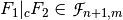 defined as where
be Vector Boolean functions. Consider the Vector Boolean function 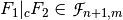 defined as where  .
.
6.6.2. Library¶
The method included in VBF to perform this construction is the following:
void concat(VBF& X, VBF& F, VBF& G)
6.6.2.1. Example¶
The following program provides the weight, algebraic degree, balancedness, correlation immunity, nonlinearity and algebraic immunity of two Vector Boolean functions given its polynomial representation in ANF and calculates the same criteria for its concatenation.
#include <iostream>
#include <fstream>
#include "VBF.h"
int main(int argc, char *argv[])
{
using namespace VBFNS;
VBF F, G, X;
vec_pol f,g;
ifstream input1(argv[1]);
if(!input1) {
cerr << "Error opening " << argv[1] << endl;
return 0;
}
input1 >> f;
F.putpol(f);
input1.close();
ifstream input2(argv[2]);
if(!input2) {
cerr << "Error opening " << argv[2] << endl;
return 0;
}
input2 >> g;
G.putpol(g);
input2.close();
cout << "weight(F)=" << weight(F) << endl;
cout << "deg(F)=" << deg(F) << endl;
if (Bal(F)) {
cout << "F is a balanced function" << endl;
} else {
cout << "F is a non-balanced function" << endl;
}
cout << "Degree of Correlation immunity of F=" << CI(F) << endl;
cout << "nl(F)=" << nl(F) << endl;
cout << "AI(F)=" << AI(F) << endl;
cout << endl;
cout << "weight(G)=" << weight(G) << endl;
cout << "deg(G)=" << deg(G) << endl;
if (Bal(G)) {
cout << "G is a balanced function" << endl;
} else {
cout << "G is a non-balanced function" << endl;
}
cout << "Degree of Correlation immunity of G=" << CI(G) << endl;
cout << "nl(G)=" << nl(G) << endl;
cout << "AI(G)=" << AI(G) << endl;
cout << endl;
concat(X,F,G);
cout << "The polynomial in ANF of the concatenation of F and G is ";
cout << endl;
Pol(cout,X);
cout << "weight(F concat G)=" << weight(X) << endl;
cout << "deg(F concat G)=" << deg(X) << endl;
if (Bal(X)) {
cout << "F concat G is a balanced function" << endl;
} else {
cout << "F concat G is a non-balanced function" << endl;
}
cout << "Degree of Correlation immunity of F concat G="
<< CI(X) << endl;
cout << "nl(F concat G)=" << nl(X) << endl;
cout << "AI(F concat G)=" << AI(X) << endl;
return 0;
}
If we use the Boolean functions  and 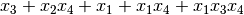 as inputs, the output would be the following:
and 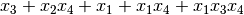 as inputs, the output would be the following:
weight(F)=8
deg(F)=3
F is a balanced function
Degree of Correlation immunity of F=0
nl(F)=4
AI(F)=2
weight(G)=8
deg(G)=3
G is a balanced function
Degree of Correlation immunity of G=0
nl(G)=4
AI(G)=2
The polynomial in ANF of the concatenation of F and G is
1+x4x5+x3+x3x5+x2+x2x4+x2x4x5
weight(F concat G)=16
deg(F concat G)=3
F concat G is a balanced function
Degree of Correlation immunity of F concat G=0
nl(F concat G)=8
AI(F concat G)=2
These results are congruent with the properties of this construction:
- .
- .
- F is 0-resilient, G is 0-resilient, and 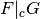 is 0-resilient.
- .
- If 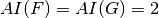, then .
6.7. Concatenation of polynomials in ANF¶
6.7.1. Description¶
Let , be Vector Boolean functions. Consider the Vector Boolean function  defined as where .
defined as where .
6.7.2. Library¶
The method included in VBF to perform this construction is the following:
void concatpol(VBF& X, VBF& F, VBF& G)
6.7.2.1. Example¶
The following program provides the ANF of the concatenation of polynomials in ANF of two Vector Boolean functions given its polynomial representation.
#include <iostream>
#include <fstream>
#include "VBF.h"
int main(int argc, char *argv[])
{
using namespace VBFNS;
VBF F,G,H;
vec_pol f,g;
NTL::mat_GF2 T;
ifstream inputf(argv[1]);
if(!inputf) {
cerr << "Error opening " << argv[1] << endl;
return 0;
}
inputf >> f;
F.putpol(f);
inputf.close();
ifstream inputg(argv[2]);
if(!inputg) {
cerr << "Error opening " << argv[2] << endl;
return 0;
}
inputg >> g;
G.putpol(g);
inputg.close();
concatpol(H,F,G);
cout << "The ANF of the concatenation of polynomials
in ANF of F and G is ";
cout << endl;
Pol(cout,H);
return 0;
}
If we use the Boolean functions and 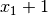 as inputs, the output would be the following:
The ANF of the concatenation of polynomials in ANF of F and G is
x1x2+x3x4+x5+1
6.8. Addition of coordinate functions¶
6.8.1. Description¶
Let 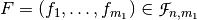, 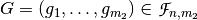 and the function conformed by adding the coordinate functions 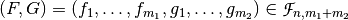. Let 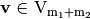, and so that 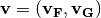.

6.8.2. Library¶
This construction can be obtained with the following method:
void addimage(VBF& X, VBF& F, VBF& G)
6.8.2.1. Example¶
The following program provides the Truth Tables of the different intermediate constructions that allow to obtain CLEFIA  S-box from the Truth Tables of the four 4-bit S-boxes
S-box from the Truth Tables of the four 4-bit S-boxes  and
and  in which it is constructed and the Truth Table of the multiplication operation in 0x2 performed in
in which it is constructed and the Truth Table of the multiplication operation in 0x2 performed in  defined by the
primitive polynomial
defined by the
primitive polynomial  .
.
#include <iostream>
#include <fstream>
#include "VBF.h"
int main(int argc, char *argv[])
{
using namespace VBFNS;
VBF F,G,T20,T21,U0,U1,Y0,Y1,Y;
NTL::mat_GF2 TSS0, TSS1, TSS2, TSS3, Tmul2;
NTL::mat_GF2 T2t0, T2t1, Tu0, Tu1, Ty0, Ty1, Ty;
ifstream inputSS0("SS0.tt");
if(!inputSS0) {
cerr << "Error opening " << "SS0.tt" << endl;
return 0;
}
inputSS0 >> TSS0;
inputSS0.close();
ifstream inputSS1("SS1.tt");
if(!inputSS1) {
cerr << "Error opening " << "SS1.tt" << endl;
return 0;
}
inputSS1 >> TSS1;
inputSS1.close();
ifstream inputSS2("SS2.tt");
if(!inputSS2) {
cerr << "Error opening " << "SS2.tt" << endl;
return 0;
}
inputSS2 >> TSS2;
inputSS2.close();
ifstream inputSS3("SS3.tt");
if(!inputSS3) {
cerr << "Error opening " << "SS3.tt" << endl;
return 0;
}
inputSS3 >> TSS3;
inputSS3.close();
ifstream inputmul2("Mul2.tt");
if(!inputmul2) {
cerr << "Error opening " << "Mul2.tt" << endl;
return 0;
}
inputmul2 >> Tmul2;
inputmul2.close();
cout << "t0=" << endl;
cout << TSS0 << endl << endl;
cout << "t1=" << endl;
cout << TSS1 << endl << endl;
F.puttt(TSS1);
G.puttt(Tmul2);
Comp(T21,F,G);
T2t1 = TT(T21);
cout << "0x2.t1=" << endl;
cout << T2t1 << endl;
F.kill();
G.kill();
F.puttt(TSS0);
G.puttt(Tmul2);
Comp(T20,F,G);
T2t0 = TT(T20);
cout << "0x2.t0=" << endl;
cout << T2t0 << endl;
cout << "u0=t0+0x2.t1=" << endl;
F.kill();
F.puttt(TSS0);
directsum(U0,F,T21);
Tu0 = TT(U0);
cout << Tu0 << endl;
G.kill();
cout << "u1=0x2.t0+t1=" << endl;
G.puttt(TSS1);
directsum(U1,T20,G);
Tu1 = TT(U1);
cout << Tu1 << endl;
G.kill();
cout << "y0=SS2(u0)=" << endl;
G.puttt(TSS2);
Comp(Y0,U0,G);
Ty0 = TT(Y0);
cout << Ty0 << endl;
G.kill();
cout << "y1=SS3(u1)=" << endl;
G.puttt(TSS3);
Comp(Y1,U1,G);
Ty1 = TT(Y1);
cout << Ty1 << endl;
addimage(Y,Y0,Y1);
Ty = TT(Y);
cout << "y=(y0,y1)=" << endl;
cout << Ty << endl;
return 0;
}
The output of this program is described in CLEFIA section in “Analysis of CRYPTEC project cryptographic algorithms”.
Note that the output of S-box  is defined by the addition of coordinate functions of both 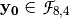 and 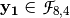.
is defined by the addition of coordinate functions of both 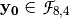 and 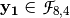.
6.9. Bricklayer¶
 and
and  ,
,  and the Bricklayer function
and the Bricklayer function  . Let
. Let  ,
,  and
and  ,
,  ,
,  and
and  .
.
6.9.2. Library¶
It can be obtained with the following method:
void bricklayer(VBF& X, VBF& F, VBF& G)
6.9.2.1. Example 1¶
KHAZAD is a block cipher designed by Paulo S. L. M. Barreto together with Vincent Rijmen, which was presented at the first NESSIE workshop in 2000, and, after some small changes, was selected as a finalist in the project. This cipher uses a S-box composed of smaller pseudo-randomly generated  mini S-boxes (the P-box and the Q-box) as represented in the figure:
mini S-boxes (the P-box and the Q-box) as represented in the figure:

The following program provides the Truth Tables of the different intermediate constructions that allow to obtain KHAZAD S-box from P and Q mini S-boxes and the permutation that apply between them.
#include <iostream>
#include <fstream>
#include "VBF.h"
int main(int argc, char *argv[])
{
using namespace VBFNS;
VBF P, Q, PQ, R, QP, S, T, U, A;
NTL::mat_GF2 Tp, Tq;
NTL::vec_ZZ r;
ifstream inputp("P.tt");
if(!inputp) {
cerr << "Error opening " << "P.tt" << endl;
return 0;
}
inputp >> Tp;
P.puttt(Tp);
inputp.close();
ifstream inputq("Q.tt");
if(!inputq) {
cerr << "Error opening " << "Q.tt" << endl;
return 0;
}
inputq >> Tq;
Q.puttt(Tq);
inputq.close();
ifstream input("R.per");
if(!input) {
cerr << "Error opening " << "R.per" << endl;
return 0;
}
input >> r;
R.putper(r);
input.close();
bricklayer(PQ,P,Q);
cout << "Bricklayer of P and Q=" << endl;
cout << TT(PQ) << endl;
Comp(S,PQ,R);
cout << "Composition of 1st bricklayer
with permutation=" << endl;
cout << TT(S) << endl;
bricklayer(QP,Q,P);
cout << "Bricklayer of Q and P=" << endl;
cout << TT(QP) << endl;
Comp(T,S,QP);
cout << "Composition of previous result
with 2nd bricklayer=" << endl;
cout << TT(T) << endl;
Comp(U,T,R);
cout << "Composition of previous result
with permutation=" << endl;
cout << TT(U) << endl;
Comp(A,U,PQ);
cout << "Composition of previous result
with 1st bricklayer=" << endl;
cout << TT(A) << endl;
return 0;
}
If we use the Truth Tables of P and Q and the representation of the permutation between them, the output are the Truth Tables described KHAZAD section in “Analysis of NESSIE project cryptographic algorithms”. Spectral radius, nonlinearity, linear potential, differential potential and linearity distance for bricklayer of P and Q mini S-boxes:

6.9.2.2. Example 2¶
The following program provides the balancedness and correlation immunity (resiliency) of two Vector Boolean functions given its Truth Table in hexadecimal representation and calculates the same criteria for the bricklayering of F and G taking as inputs their Truth Tables in hexadecimal representation.
#include <iostream>
#include <fstream>
#include "VBF.h"
int main(int argc, char *argv[])
{
using namespace VBFNS;
VBF F, G, H;
ifstream input1(argv[1]);
if(!input1) {
cerr << "Error opening " << argv[1] << endl;
return 0;
}
F.putHexTT(input1);
input1.close();
ifstream input2(argv[2]);
if(!input2) {
cerr << "Error opening " << argv[2] << endl;
return 0;
}
G.putHexTT(input2);
input2.close();
cout << "Correlation immunity of F: " << CI(F) << endl;
if (Bal(F)) {
cout << "F is a balanced function" << endl;
} else {
cout << "F is a non-balanced function" << endl;
}
cout << "Correlation immunity of G: " << CI(G) << endl;
if (Bal(G)) {
cout << "G is a balanced function" << endl;
} else {
cout << "G is a non-balanced function" << endl;
}
bricklayer(H,F,G);
cout << "Correlation immunity of F bricklayer G: " << CI(H) << endl;
if (Bal(H)) {
cout << "F bricklayer G is a balanced function" << endl;
} else {
cout << "F bricklayer G is a non-balanced function" << endl;
}
return 0;
}
If we use the Boolean functions with the following Truth Tables (in hexadecimal representation) as inputs:
6cb405778ea9bd30
5c721bcaac27b1c5
The output would be the following:
Correlation immunity of F: 1
F is a balanced function
Correlation immunity of G: 2
G is a balanced function
Correlation immunity of F bricklayer G: 1
F bricklayer G is a balanced function
6.10. Summary¶
| Operations and constructions over VBF | |
|---|---|
| SYNTAX | DESCRIPTION |
long operator==(VBF& F, VBF& G) |
Returns 1 if F and G are equal |
void Comp(VBF& X, VBF& F, VBF& G) |
 |
void inv(VBF& X, VBF& A) |
 |
void sum(VBF& X, VBF& F, VBF& G) |
 |
void directsum(VBF& X, VBF& F, VBF& G) |
 |
void concat(VBF& X, VBF& F, VBF& G) |
 |
void concatpol(VBF& X, VBF& F, VBF& G) |
 |
void addimage(VBF& X, VBF& F, VBF& F) |
 |
void bricklayer(VBF& X, VBF& F, VBF& G) |
 |